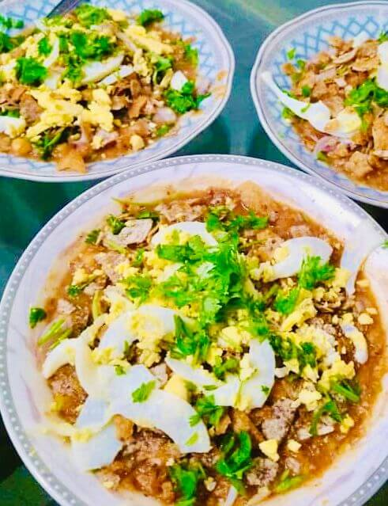
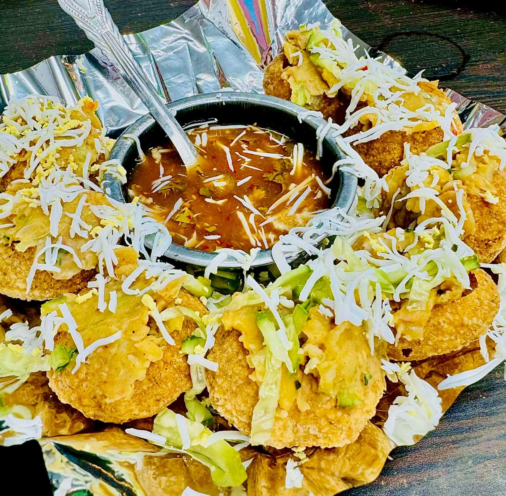
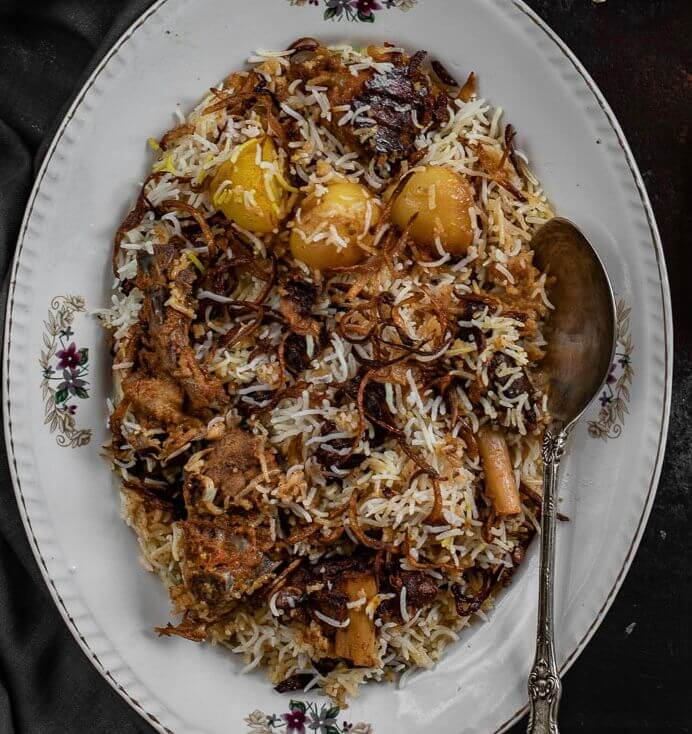
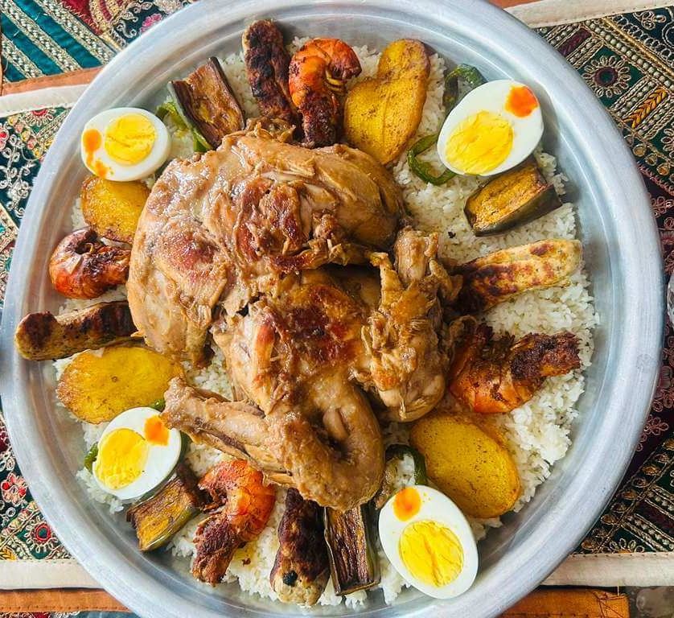
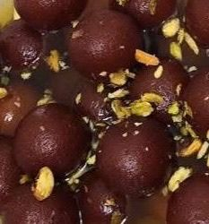
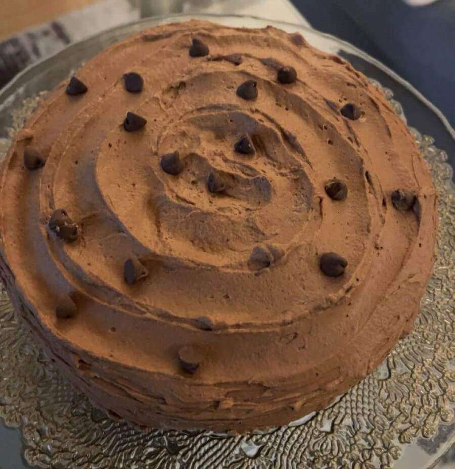
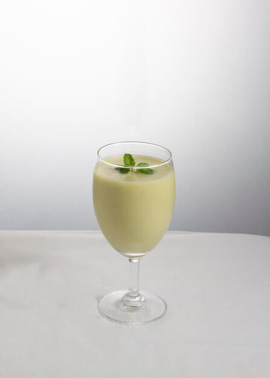

Weekly Specials
We have new specials every week. Our amazing Chefs are working tirelessly to reinvent and innovate vibrant food to serve our guests amazing experiences.


| Items | Description | Serving Size |
|---|---|---|
| Authentic Chotpoti | An Authentic street food. Tangy, Sweet, and Spicy flavors with the mix of soft chickpea topped with crunchy shells. Served with fresh herbs and spices. | 2 per serving |
| Authentic Fhuchka | Marinated Chicken Chunks skewered with Onions, Bell Peppers and Carrots. Served with green papaya salad and house special tangy tomato sauce. | 2 per serving |
| Moglai Porota | Bite sized crispy shells filled with yellow chickpea and potato filling, savory tamarind chutney, onions, coriander leaves,chilli spice mix and topped with grated boilled egg. | 10 per serving |


| Items | Description | Serving Size |
|---|---|---|
| Kacchi Biryani | A form of biryani native to Bangladesh. Delicate, melt in mouth Mutton Kacchi marinated over night. Topped with fragrant Basmati Rice, Aromatic Golden Fried Onions, Deep Fried Potatos, Our House Special Blend of Spices, and Ghee. Slow cooked in sealed pot with its own steam in low heat. "Salad complementary." | 2 per serving |
| Reshmi Kabab | Beef or Chicken kababs.Melt in mouth kababs, made using our house special spices and in-house grown herbs. | 2 per serving |
| Bangladeshi Chicken Roast | A different version of chicken roast than what you are used to. Rich gravy, perfectly cooked chicken quarters. Infused with kewra essence, rose water, and ghee. | 2 per serving |


| Items | Description | Serving Size |
|---|---|---|
| Malai Jorda | A sweet rice based dish infused with fresh orange, plum sugar jaggery, ghee, and dry fruits. Topped with small cottage cheese sweet balls, and fresh house made malai. | 2 per serving |
| Noler Gur Sondhesh | A milk based desert. Made using authentic Date Palm Jaggery sourced from villages of Bangladesh. The gur or jaggery is harvested in the winter months in a delicate process which gives it a unique smokey flavor. | 2 per serving |
| Chocolate Brownie cake | Fudgy housemade brownie cake layered with Nolen Gur caramel and chocolate chips. | 1 per serving |

| Items | Description | Serving Size |
|---|---|---|
| Borhani | Thick yogurt based drink. A perfect blend of spice, herb, sweet, and sour. | 1 per serving |
| Badam Shorbot | A sweet and rich drink infused with saffron, house blend dry fruits and nuts. | 1 per serving |
| Infused Sodas | Fizzy sodas infused with flavors such as strawberry, mixed berry, orange, mango, and lemon. | 1 per serving |